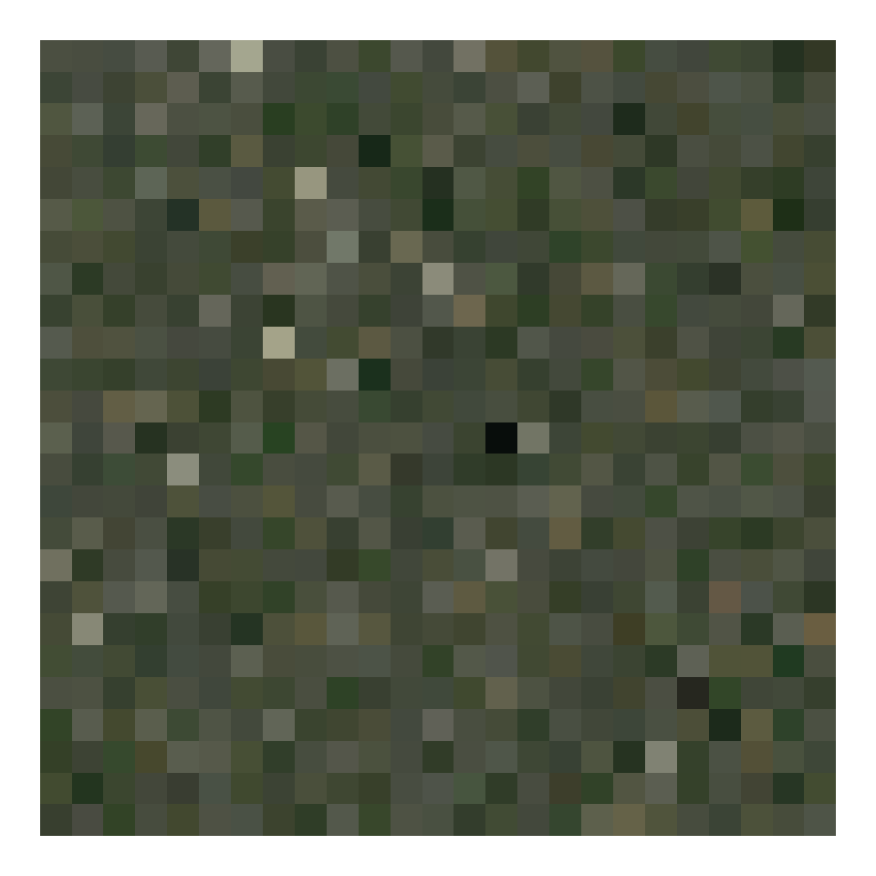
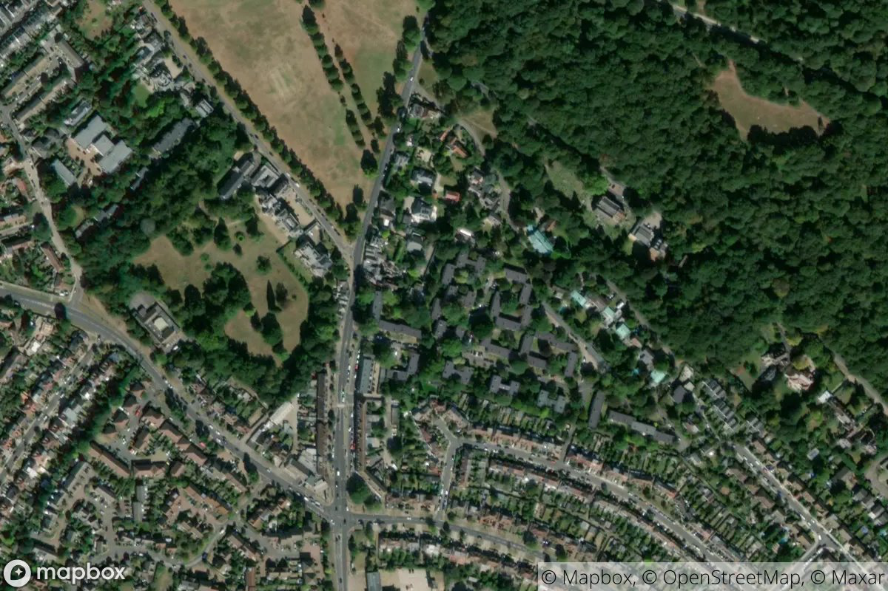
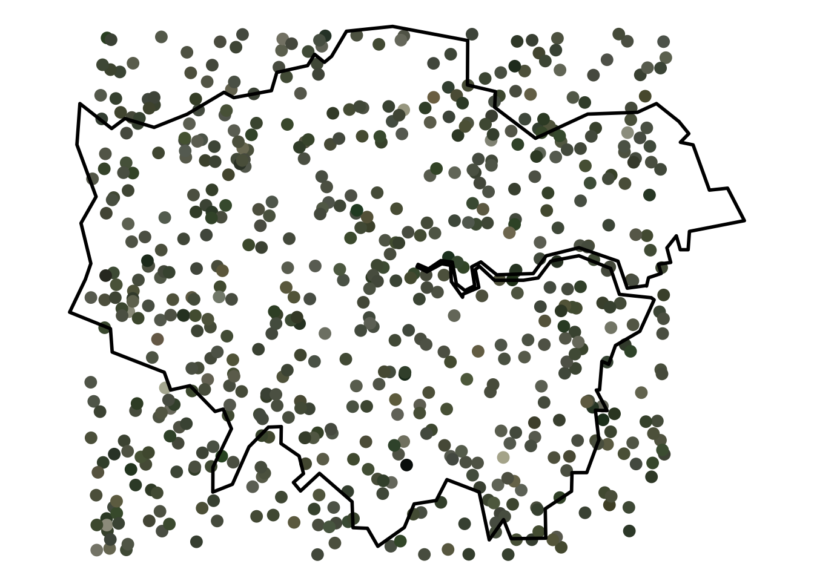
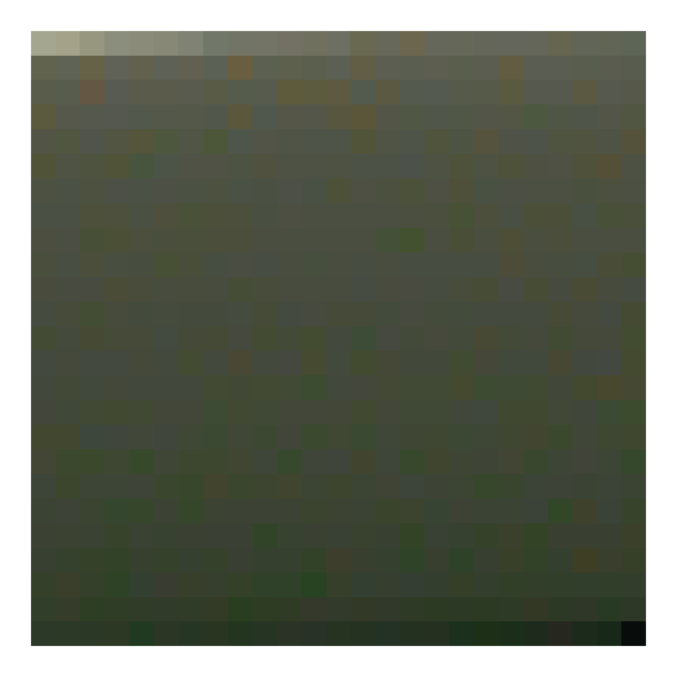

suppressPackageStartupMessages({
library(rtweet)
library(magick)
library(tidyverse)
library(sf)
})
tl;dr
I used the {rtweet} and {magick} R packages to fetch tweets of random satellite images of London from londonmapbot and then reduced each one to a single representative colour.
Note
londonmapbot no longer posts to Twitter due to API changes. It can be found on Mastodon instead at botsin.space/@londonmapbot. You can read about that in a more recent post.
Green/grey belt
I created the @londonmapbot Twitter bot to tweet out satellite images of random points in Greater London. You can read earlier posts about how it was made and how I mapped the points interactively.
I figured we could sample these to get to ‘the colours of London’, which can be mapped or tiled.
This is not too dissimilar to efforts to find the ‘average colour’ of countries of the world, which Erin wrote a nice post about, for example.1 The difference is that we aren’t finding a colour to represent London, we’re representing London with a series of single-colour points.
This is relatively trivial with the packages {rtweet} to pull tweets and {magick} to manipulate the images. We can use {sf} to place the points on a map and {ggplot2} for other visualisations.
Get bot log
First, load the packages we need. You’ll need to use install.packages() for each one if you haven’t already installed them.
{rtweet} makes it very easy to collect tweet content. To the get_timeline() function you can pass an account name and the number of tweets you want to fetch. You’ll need to set up authenication first, of course.
tweets_read <- get_timeline("londonmapbot", n = 625)Why do I want 625? Well, the bot has tweeted out nearly 9000 images at time of writing, but I want a useable number for this post. (Spoiler: I also want to make a 25 by 25 grid of squares as one of my outputs.)
The function actually returns more than 625 because {rtweet} maximises the number of tweets it fetches for each API call. Better to return more than you asked for, rather than less.
The returned tibble contains a lot of information. I’m only interested in the media_url and text columns, from which I can extract the satellite image URLs and, with some regular expressions, the coordinate information that’s provided in the body of the tweet.
tweets <- tweets_read %>%
transmute(media_url = unlist(media_url), text) %>%
transmute(
media_url,
latitude = str_extract(text, "^\\d{2}.\\d{1,4}"),
longitude = str_extract(text, "(?<=, ).*(?=\nhttps)")
) %>%
slice(1:625)So we’ve got a tibble with 3 columns and 625 rows.
glimpse(tweets)Rows: 625
Columns: 3
$ media_url <chr> "http://pbs.twimg.com/media/E7BOglJVgAEE3XL.jpg", "http://pb…
$ latitude <chr> "51.5651", "51.4665", "51.3752", "51.5041", "51.5668", "51.3…
$ longitude <chr> "0.0466", "-0.3526", "-0.1997", "-0.0174", "-0.1882", "-0.13…I’m going to iterate through each URL to download the associated image to a temporary directory. I’ve used a walk() function from {purrr} rather than map() because we aren’t returning anything; we’re saving a file to a folder.
Specifically, I used walk2(), which lets me supply two values to the iterate process: the URL and also the iteration number for that URL. That means I can print a message in the form ‘Fetching 1 of 625’ and get a rough idea of progress.
I’ve also added a Sys.sleep() call to slow the process, as not to hammer the Twitter API too hard.2
# Function: download images from URLs
download_images <- function(paths, dir) {
Sys.sleep(sample(0:2, 1)) # random pause
tw_df <- data.frame(number = 1:length(paths), url = paths)
purrr::walk2(
tw_df$number, tw_df$url,
~ { cat("Fetching", .x, "of", length(tw_df$number), "\n")
download.file(.y, file.path(dir, basename(.y))) }
)
}So, you can pass a vector of URLs and a directory path to the function. For purposes of this post, I’m going to save the files to a temporary folder.
That call takes a little while and the duration will vary given the random pauses built into the function. I’ve hidden the output because there would be 625 items printed to the console. An example of the output:
Fetching 479 of 625
trying URL 'http://pbs.twimg.com/media/E6Akw2fXMAA3VSk.jpg'
Content type 'image/jpeg' length 113537 bytes (110 KB)
==================================================
downloaded 110 KBTo prove this has worked, we can fetch all the image paths from the directory in which they’re stored and count how many there are.
files <- list.files(tmp, ".jpg$", full.names = TRUE)
length(files)[1] 625Great, as expected. Now we have a set of satellite images that we can manipulate.
Demo: one image
As a demo, let’s take a look at the first image.
ex_in <- image_read(files[1])
ex_in
Now we can crop out the logos, reduce its colours and resize it using functions from the {magick} package.
‘Quantization’ is the process we’ll use on each image; it’s basically the algorithmic simplification of an image to the colours that best represent it. You could, for example, use this for reducing the number of colours in an image to make it easier to compress while minimising information loss. We’re going to quantize to just one colour to find the colour that best represents the image. Note that this isn’t the same as ‘taking an average colour’.
ex_square <- ex_in %>%
image_crop("x420-0") %>%
image_quantize(1) %>%
image_resize("100x100!")
ex_squareSo the colour of that square is what you get when you quantize the original satellite image down to one colour. What is that colour? We can extract the hex code.
ex_rgb <- image_data(ex_square, channels = "rgb")[1:3]
ex_hex <- toupper(paste0("#", paste(as.character(ex_rgb), collapse = "")))
ex_hex[1] "#48503E"Of course, we can generally expect that the colour will be somewhere between very green (city fringes, parks, golf courses) and very grey (urban), while some may be more blue (reservoirs).
All images
The image_*() functions in {magick} are generally vectorised, so we can pass it all of the paths to our files and apply the wrangling steps across all of the images at once.
imgs_in <- image_read(files)
imgs <- image_crop(imgs_in, "x420-0")I want to grab the single quantized hex value representing each image.
imgs_dat <- imgs %>% image_quantize(1) %>% image_resize("1x1!")
hex_dat <- map(1:625, ~image_data(imgs_dat, "rgb", frame = .x))
hex_cols <- hex_dat %>%
map_chr(~paste0("#", toupper(paste(.[1:3], collapse = ""))))
head(hex_cols)[1] "#48503E" "#535C3F" "#435034" "#415534" "#5D6152" "#535F44"Now we can bind these to our tweets dataset.
tweets_cols <- tweets %>% bind_cols(hex = hex_cols)
glimpse(tweets_cols)Rows: 625
Columns: 4
$ media_url <chr> "http://pbs.twimg.com/media/E7BOglJVgAEE3XL.jpg", "http://pb…
$ latitude <chr> "51.5651", "51.4665", "51.3752", "51.5041", "51.5668", "51.3…
$ longitude <chr> "0.0466", "-0.3526", "-0.1997", "-0.0174", "-0.1882", "-0.13…
$ hex <chr> "#48503E", "#535C3F", "#435034", "#415534", "#5D6152", "#535…Visualisation: map
The obvious thing to do is to create a map with each point marking the location of a satellite image tweeted by londonmapbot, filled with the single representative colour for that image.
The bot samples from a square roughly covering Greater London within the M25, so it might be nice to show the outline of London for reference. The {sf} package makes it straightforward to read a GeoJSON of the NUTS1 boundaries for the UK via the Open Geography Portal API, then convert it to latitude-longitude coordinates and filter for London only.
nuts_path <- "https://opendata.arcgis.com/datasets/01fd6b2d7600446d8af768005992f76a_4.geojson"
ldn_sf <- st_read(nuts_path) %>%
st_transform(crs = 4326) %>%
filter(nuts118nm == "London")Reading layer `NUTS_Level_1_(January_2018)_Boundaries' from data source `https://opendata.arcgis.com/datasets/01fd6b2d7600446d8af768005992f76a_4.geojson' using driver `GeoJSON'
Simple feature collection with 12 features and 9 fields
Geometry type: MULTIPOLYGON
Dimension: XY
Bounding box: xmin: -8.649996 ymin: 49.88234 xmax: 1.762942 ymax: 60.86078
Geodetic CRS: WGS 84And we can convert our tweets tibble to an sf-class spatial object as well, given that it contains coordinate information.
tweets_sf <- tweets_cols %>%
st_as_sf(coords = c("longitude", "latitude"), crs = 4326)Then it’s a case of adding these to a map, which in this case is a {ggplot2} object. The geom_sf() function is great at accepting and understanding polygons and points.
ggplot() +
geom_sf(data = tweets_sf, col = hex_cols, size = 3) +
geom_sf(data = ldn_sf, alpha = 0, size = 1, col = "black") +
theme_void()
Are there any patterns here? Maybe it’s greener in the suburbs? (It’s a serious question; I’m a deuteranope.)3
Visualisation: tiles
Recently I’ve written some posts involving R and abstract art (like pixel art and a Shiny app to remix art by Sol LeWitt).
So why not get more abstract with these data points? We can create squares of each colour and tile them.
Here the tiles are laid out row by row from right to left, in a more-or-less random order.
hex_tiles <- crossing(x = 1:25, y = 1:25) %>%
bind_cols(hex = tweets_cols$hex)
ggplot() +
geom_tile(aes(hex_tiles$x, hex_tiles$y), fill = hex_tiles$hex) +
theme_void()For fans of order, we could instead arrange them by brightness, or ‘luminance’.4 Here I’ve modified a simple approach by Wouter van der Bijl from a StackOverflow post.
# Get luminance for hex values
rgb_vals <- col2rgb(tweets_cols$hex) # Hex to RGB
lab_vals <- convertColor(t(rgb_vals), 'sRGB', 'Lab') # RGB to Lab
hex_lum <- tweets_cols$hex[order(lab_vals[, 'L'])] # luminance order
# Set up dummy xy tile locations
cross_xy <- crossing(y = 1:25, x = 1:25)
# Create tibble of x, y, hex luminance
hex_tiles_bright <- tibble(
x = cross_xy$x,
y = rev(cross_xy$y),
hex = hex_lum
)
# Plot so 'lightest' in top left, 'darkest' in bottom right
ggplot(hex_tiles_bright) +
geom_tile(aes(x, y), fill = rev(hex_tiles_bright$hex)) +
theme_void()
The colours make me think of the classic smoggy ‘pea souper’ of London in times past, which is fitting.
Or, y’know, sewage.
Of course, there’s lots more images available in the londonmapbot feed and many other ways to visualise these data, so I may return to this idea in the future.
Environment
Session info
Last rendered: 2023-07-17 18:33:02 BSTR version 4.3.1 (2023-06-16)
Platform: aarch64-apple-darwin20 (64-bit)
Running under: macOS Ventura 13.2.1
Matrix products: default
BLAS: /Library/Frameworks/R.framework/Versions/4.3-arm64/Resources/lib/libRblas.0.dylib
LAPACK: /Library/Frameworks/R.framework/Versions/4.3-arm64/Resources/lib/libRlapack.dylib; LAPACK version 3.11.0
locale:
[1] en_US.UTF-8/en_US.UTF-8/en_US.UTF-8/C/en_US.UTF-8/en_US.UTF-8
time zone: Europe/London
tzcode source: internal
attached base packages:
[1] stats graphics grDevices utils datasets methods base
loaded via a namespace (and not attached):
[1] htmlwidgets_1.6.2 compiler_4.3.1 fastmap_1.1.1 cli_3.6.1
[5] tools_4.3.1 htmltools_0.5.5 rstudioapi_0.15.0 yaml_2.3.7
[9] rmarkdown_2.23 knitr_1.43.1 jsonlite_1.8.7 xfun_0.39
[13] digest_0.6.31 rlang_1.1.1 fontawesome_0.5.1 evaluate_0.21 Reuse
CC BY-NC-SA 4.0